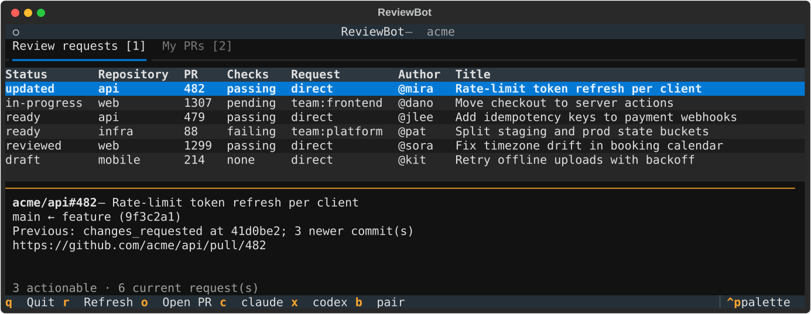

Your review queue, handed to your agents.
ReviewBot is a terminal UI for the pull requests waiting on you. Pick one, press a key, and it's checked out at its exact head commit with Claude Code, Codex, or any agent Herdr can run already reviewing it, using your prompt. You read the findings. You decide what gets posted.
$uv tool install git+https://github.com/mysticcoders/reviewbot

From "review requested" to a running agent in one keypress.
GitHub stays the source of truth. ReviewBot reads it through gh, sets up a
clean workspace, and gets out of the way.
Watch what matters
Point it at an org, a handful of repos, or everything you can see. It lists every open PR asking for your review, directly or through one of your teams, with checks and what changed since your last pass.
Press a key
ReviewBot fetches the PR, verifies the head SHA hasn't moved, and creates a detached worktree at that exact commit. Your own checkouts are never touched.
Review alongside the agent
A new Herdr tab opens with your agent running in the worktree and your review prompt already sent. Ask follow-ups, run tests, then submit the review yourself.
Built for people who review a lot of code.
Watch any scope
Whole orgs, individual repos, or a mix, with --watch and --all to change scope for a single run.
Bring your own agents
Any agent kind Herdr supports, each with its own shortcut key and CLI arguments. Group them to get two independent reviews of one PR.
Your prompt, per agent
One shared review prompt or one per agent, as plain Markdown files with placeholders for the PR, SHA, checks, and your last review.
Exact-commit worktrees
Every review runs in its own detached worktree at the PR head. If the branch moves mid-launch, ReviewBot stops and asks you to refresh.
Knows what changed
PRs you reviewed at an older commit show as updated with the number of new commits. Ones you've already handled at the current commit can't be launched again by accident.
Your PRs, too
A second tab tracks your own open PRs: conflicts, failing checks, who approved, whose review is stale. Re-request everyone stale with one key.
No defaults. Just the agents you choose.
ReviewBot doesn't ship with a favorite. You declare each agent in a small TOML file, and the TUI builds its shortcuts from it.
- Any Herdr kind: Claude Code, Codex, Gemini, Cursor, OpenCode, Copilot, Amp, and more.
- Same agent, different settings: a quick Codex pass on
x, a high-effort one ond. - Groups: launch several agents on one PR, each in its own tab.
- Checked up front:
reviewbot doctorconfirms every agent is installed and every prompt file exists.
~/.config/reviewbot/config.toml
watch = ["acme", "someone/tool"]
prompt = "review.md"
[[agents]]
name = "claude"
kind = "claude"
key = "c"
[[agents]]
name = "codex-deep"
kind = "codex"
key = "d"
args = ["-c", "model_reasoning_effort=high"]
prompt = "codex-review.md"
[[groups]]
name = "pair"
agents = ["claude", "codex-deep"]
key = "b"You stay the reviewer of record.
ReviewBot never submits a review or posts a comment. The starter prompt tells the agent not to edit the branch, push, or comment either. The findings come back to you in the terminal, and what reaches GitHub is up to you.
Running in five minutes.
ReviewBot is a Python CLI. It drives tools you probably already have.
- Python 3.11+ and uv
- Installs and runs ReviewBot. Get uv.
- GitHub CLI
- All GitHub queries and clones go through
gh, using the account it's logged in as. Get gh. - git
- Per-PR worktrees.
- Herdr 0.7+
- The terminal workspace your review agents run in. herdr.dev.
- Agent CLIs
- Whichever agents you configure, such as Claude Code or Codex.
# install
uv tool install git+https://github.com/mysticcoders/reviewbot
# sign in to GitHub
gh auth login
# write a config with what to watch and your agents
reviewbot init --watch acme --agent claude:c --agent codex:x
# check gh, git, herdr, agents, and prompts
reviewbot doctor
# inside Herdr
reviewbot tui